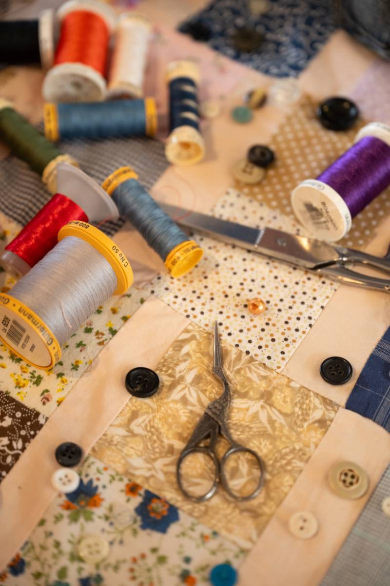
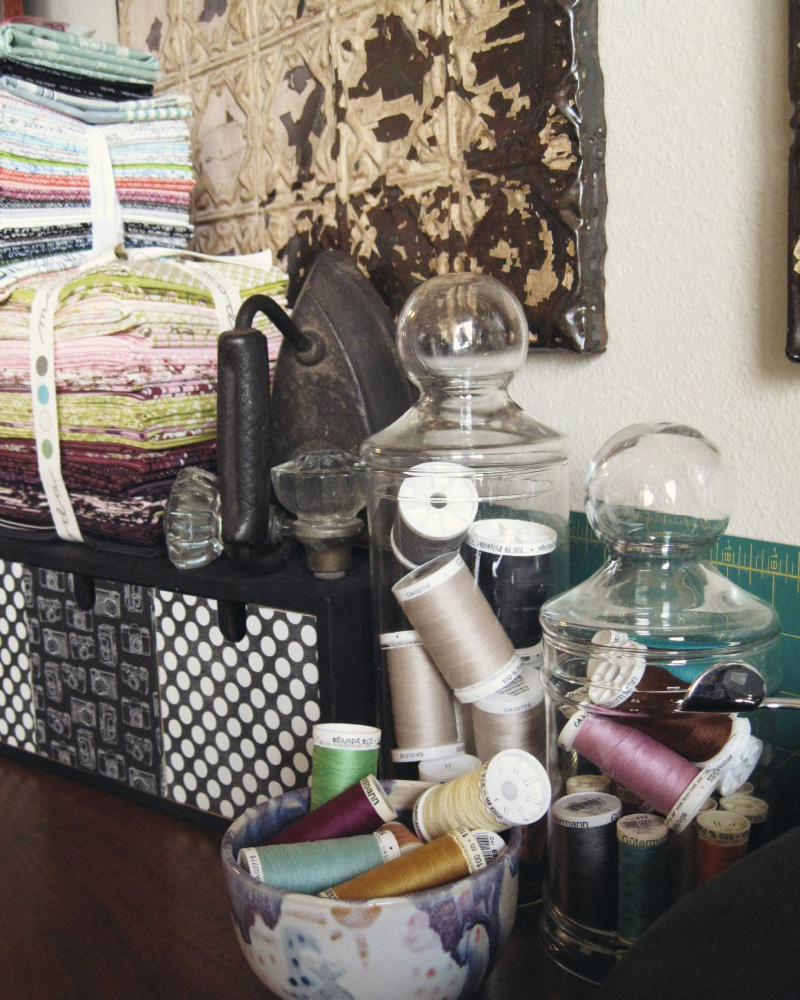
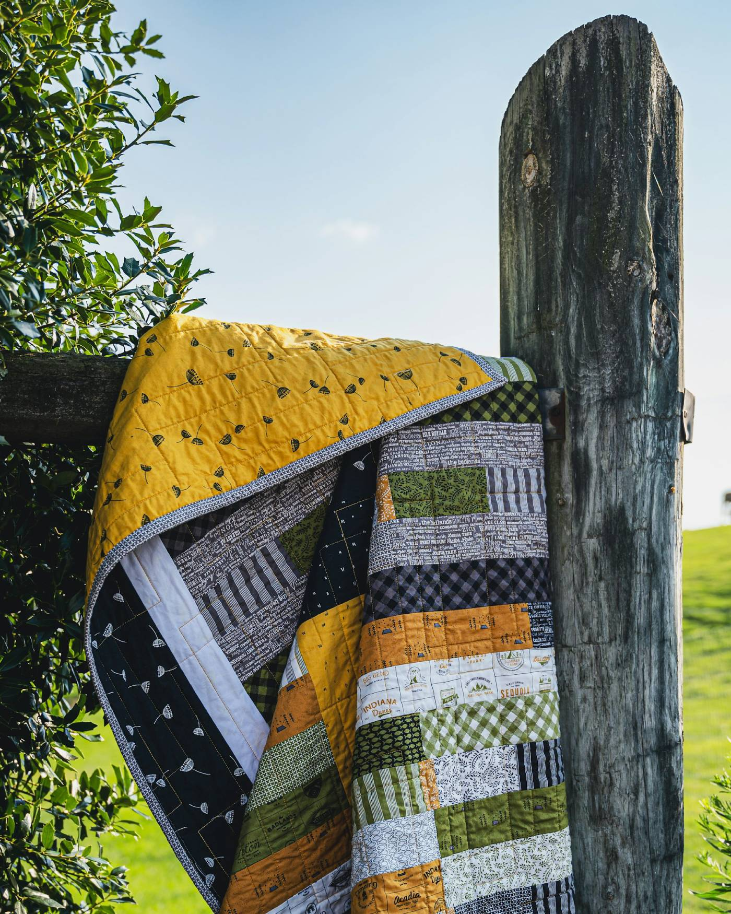
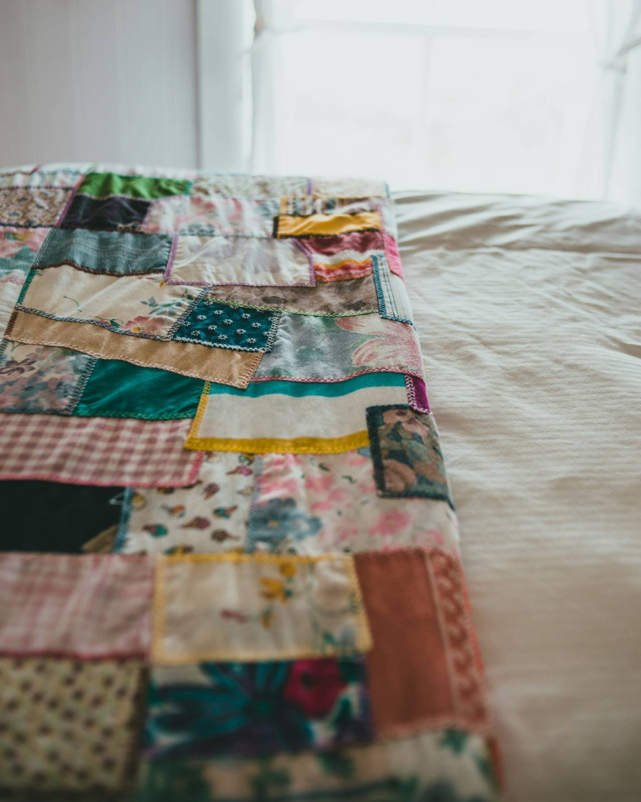
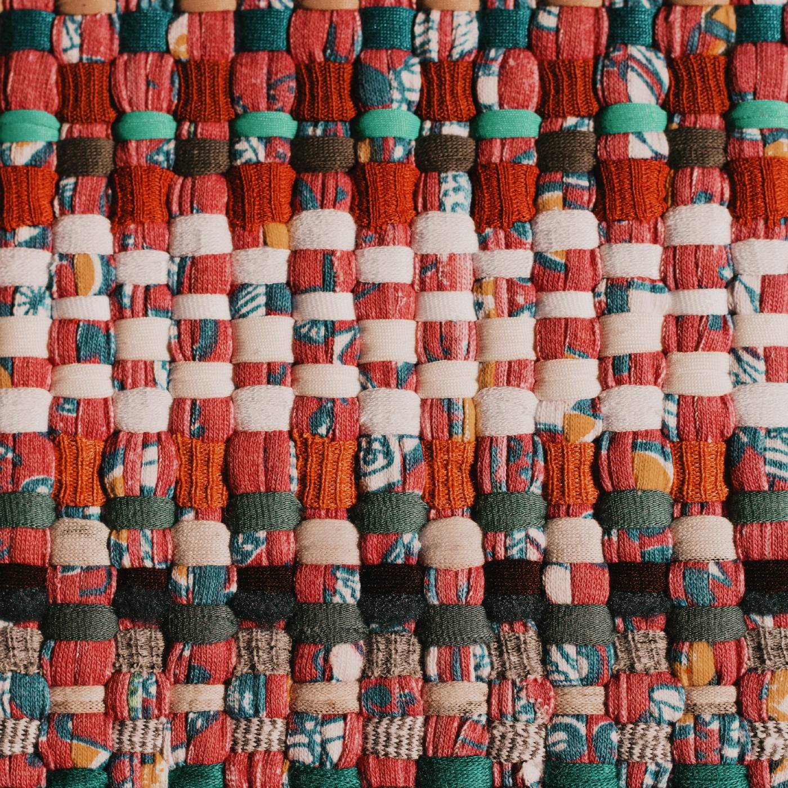
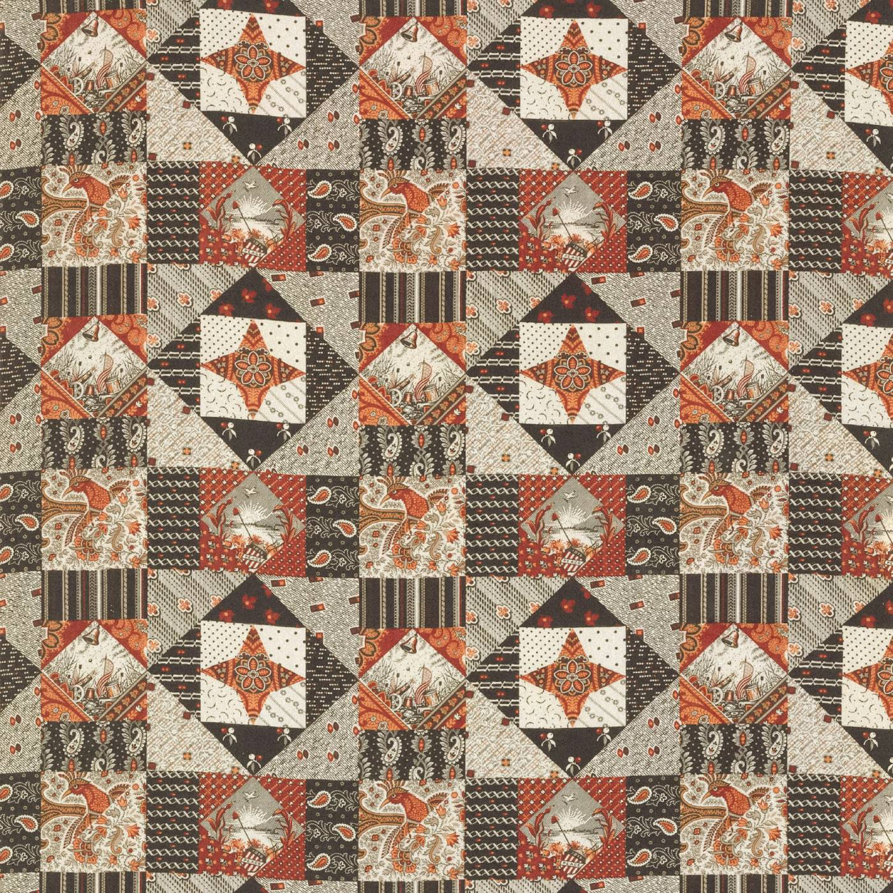
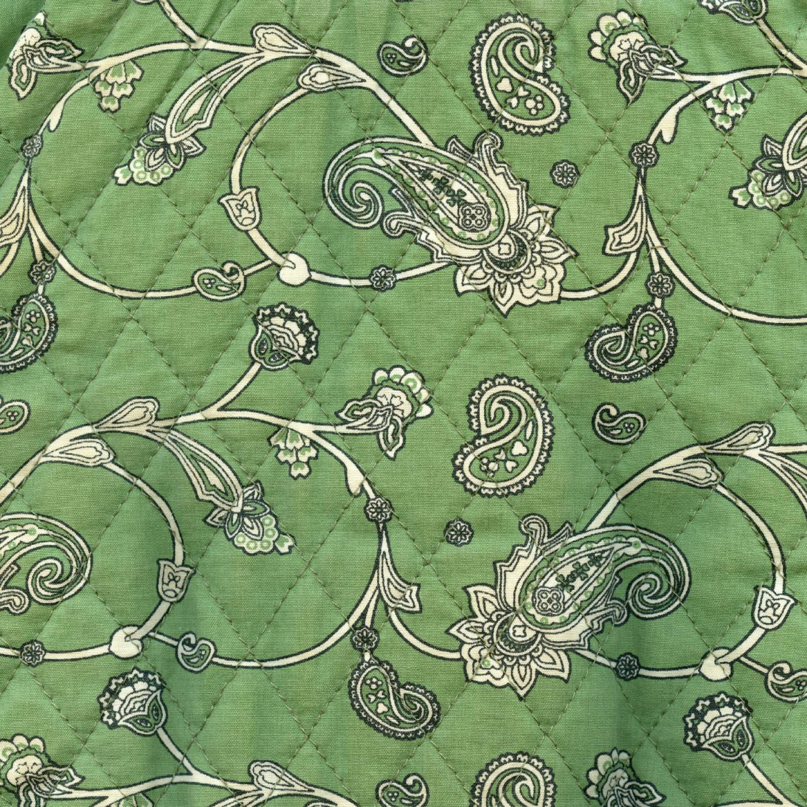
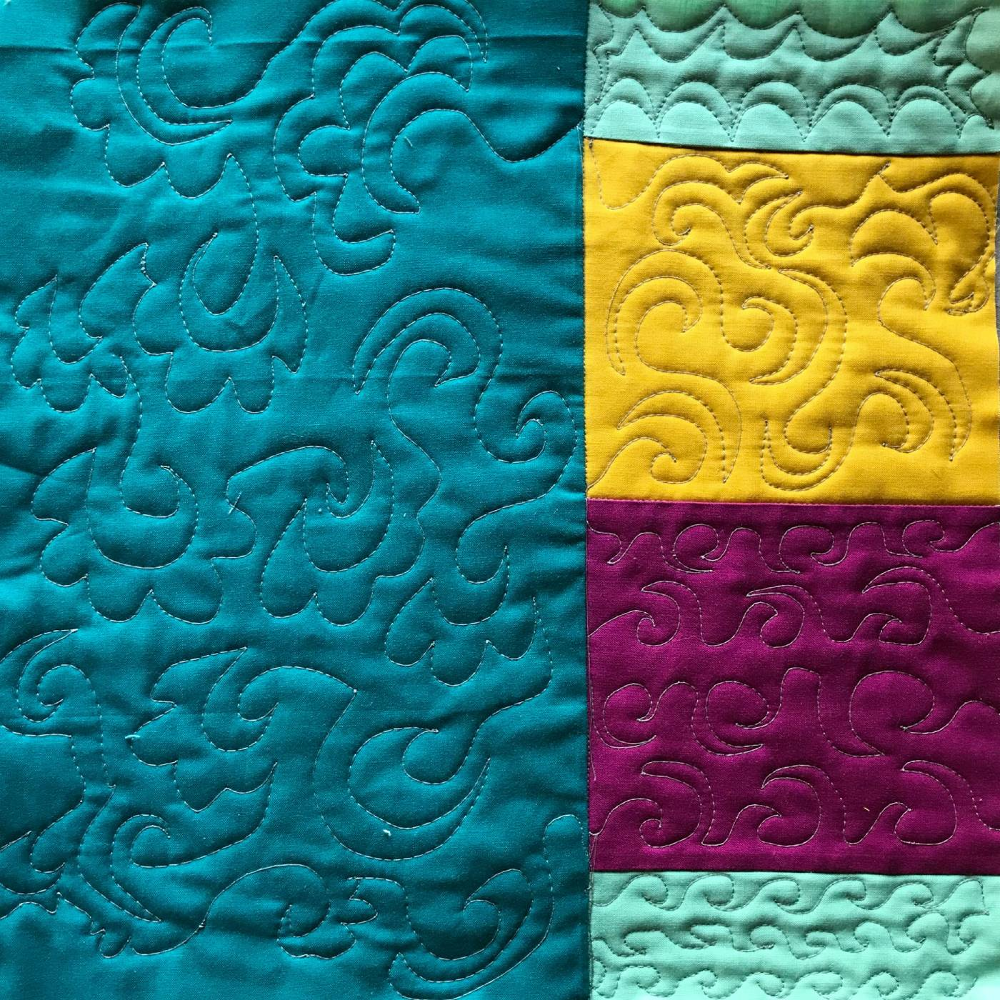
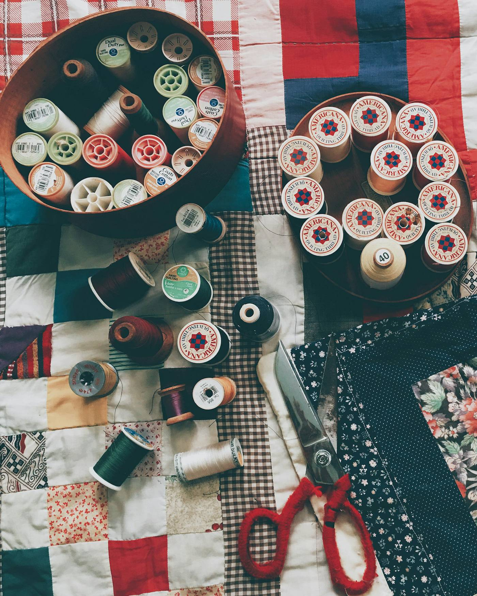

Craftsmanship
Careful piecing, durable construction, and refined material choices.
Handmade quilts with memory and meaning
Mark creates heirloom quilts and memory quilts with a warm, thoughtful approach to texture, color, and everyday beauty.

About Mark
Mark is a quilt maker drawn to pieces that feel both deeply useful and quietly expressive. His work blends traditional quilt-making techniques with a modern editorial eye.
At the center of his practice are craftsmanship, education, community engagement, and artistic integrity. Each quilt is made to be lived with, remembered, and passed on.
Careful piecing, durable construction, and refined material choices.
Sharing techniques, process, and confidence through gentle teaching.
Creating welcoming spaces for conversation, making, and exchange.
Thoughtful design decisions guided by meaning rather than trends.
Our Quilts
From custom bed quilts to one-of-a-kind memory pieces, each work is designed to hold warmth, beauty, and personal meaning.

Designed around your home, palette, and the feeling you want the piece to carry.

Created from personal textiles and clothing, preserving stories in stitched form.

Small-batch works released throughout the year in limited numbers.
Photo Gallery
A closer look at stitching, drape, palette, and the life of each quilt in space.




Order Now
If you’re considering a custom quilt or a memory quilt, the process starts simply. We’ll talk through size, purpose, materials, timing, and the mood you want the finished piece to hold.

Sew Along
Mark’s sew-alongs are for makers who want a thoughtful pace, clear guidance, and a feeling of community. Expect seasonal projects, studio notes, and approachable instruction.
Join the Sew AlongShort guided projects designed around color, rhythm, and practical skill-building.
Reflections on process, materials, tools, and the art of making with intention.
A welcoming place for questions, progress sharing, and encouragement.
Contact
Whether you’re interested in a custom quilt, a memory piece, or a future sew-along, I’d love to hear a little about what you have in mind.
You can also write directly at hello@markquilts.com